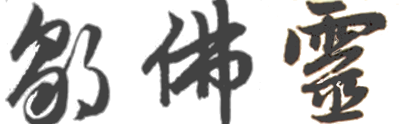
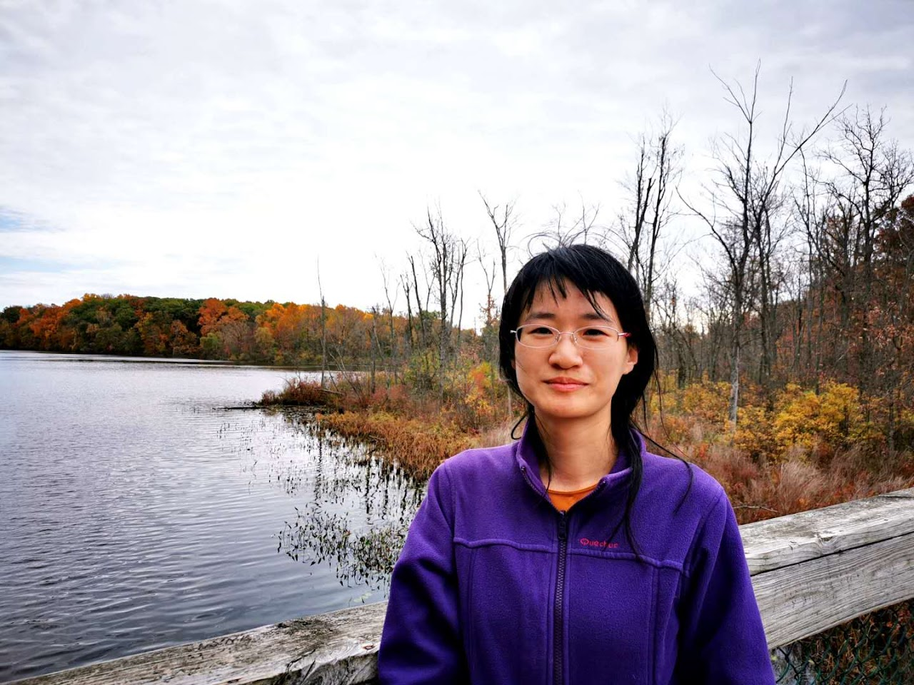

Foling Zou 邹佛灵 About meI am an assistant professor in the Institute of Mathematics at Chinese Academy of Sciences. I received my PhD in 2020 under the guidence of Prof. J. Peter May. My interest is in homotopy theory. I am currently working on equivariant computations. My CV. |
 |
| Email: | LastnameFirstname@amss.ac.cn |
|---|---|
| Office: | 思源楼309 |